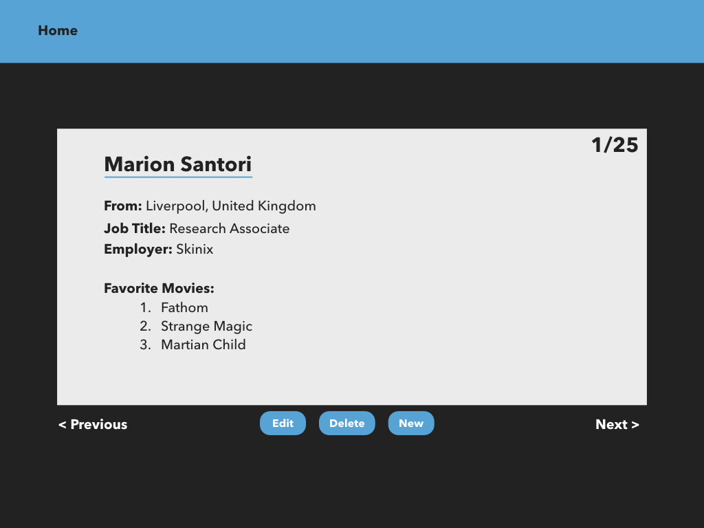

User Directory
Instructions
Project Summary
In this project, you will create a user directory that matches the mockup provided. You will create this project from the ground up, including running create-react-app and building out the CSS and React components. The user data you will display has been provided for you in data.js. You won’t receive much instruction on this project, but ask your SME’s for help as often as needed.
Example
Requirements
Your project should…
Use at least 3 different components, including at least 1 that holds and updates state.
Allow users to navigate through all the user information from the array in data.js using the
< PreviousandNext >buttons. Include special handling for those buttons for the first and last users in the array to avoid errors.Display where in the array the current user is located (ex. 1/25)
Match the layout and styling of the mockup as closely as possible.
Going Further
After the
< PreviousandNext >buttons are functional, start working onDelete.After the
Deletebutton is functional, start working onNew. This will require a form for users to input new information. Focus on the functionality more than the styling.After the
Newbutton is functional, start working onEdit. This will also require a form for users to input updated information. Focus on the functionality more than the styling.
Push Your Changes
Be sure to push your work to GitHub. Name the repository User Directory.